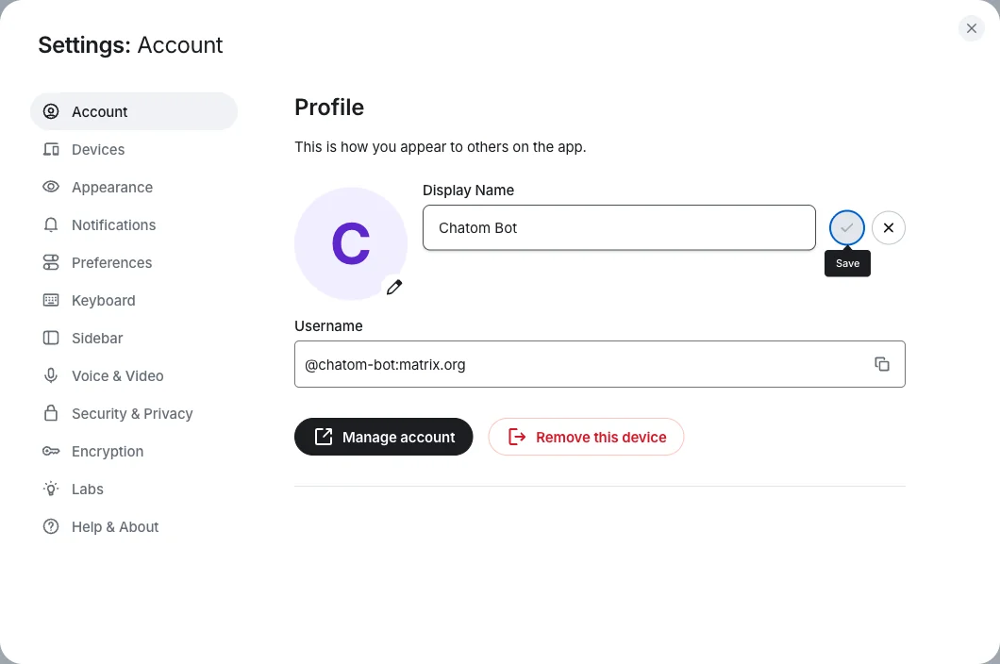
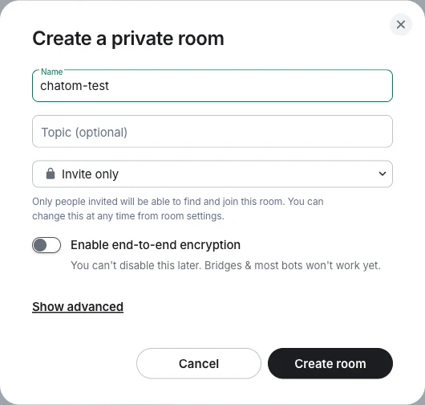
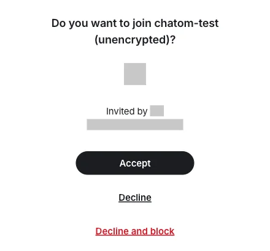

Set up a Matrix bot¶
Matrix has no separate bot accounts: a bot is an ordinary user. This guide registers that user on matrix.org, gets an access token for it, puts it in an unencrypted room, and checks the connection with Chatom’s examples. Any homeserver works the same way; replace matrix.org with yours.
Create the account¶
Open Element in a private browser window, so you stay signed in to your own account elsewhere, and select Create account. Keep matrix.org as the host or pick your homeserver, then choose the bot’s username and password and finish the server’s sign-up steps.
Open Settings → Account and set a Display Name, which is how the bot appears in rooms.

Get an access token¶
Log in once through the client-server API to get a token tied to its own device. Choosing the device_id keeps later logins on the same device instead of adding a new one each time:
curl -s -X POST https://matrix-client.matrix.org/_matrix/client/v3/login \
-H "Content-Type: application/json" \
-d '{
"type": "m.login.password",
"identifier": {"type": "m.id.user", "user": "chatom-bot"},
"password": "<password>",
"device_id": "CHATOMBOT",
"initial_device_display_name": "chatom"
}'
Keep the access_token from the response in your secret store, along with the device_id. A token from Element’s own Help & About page also works, but it belongs to that browser session and stops working when you sign out of Element.
Put the bot in an unencrypted room¶
Chatom’s MatrixBackend only works in unencrypted rooms. In Element, signed in as yourself, create a room and switch off Enable end-to-end encryption before selecting Create room. Encryption cannot be turned off afterward.

Invite the bot from the room’s composer:
/invite @chatom-bot:matrix.org
The bot does not accept invites by itself. Sign in to Element as the bot and select Accept.

Copy the room id from the room’s Settings → Advanced. The examples take the id, or an alias such as #chatom-test:matrix.org if the room has one.
Connect with Chatom¶
pip install chatom matrix-nio
import os
from chatom.matrix import MatrixBackend, MatrixConfig
backend = MatrixBackend(
config=MatrixConfig(
homeserver="https://matrix.org",
user_id="@chatom-bot:matrix.org",
access_token=os.environ["MATRIX_ACCESS_TOKEN"],
device_id="CHATOMBOT",
)
)
device_id is required with an access token. You can pass password instead of a token, and Chatom logs in when it connects; set device_id then too, or each run adds a device to the account.
Check the setup¶
export MATRIX_HOMESERVER=https://matrix.org
export MATRIX_USER_ID=@chatom-bot:matrix.org
export MATRIX_ACCESS_TOKEN=...
export MATRIX_DEVICE_ID=CHATOMBOT
export MATRIX_TEST_ROOM='!roomid'
export MATRIX_TEST_USER_ID=@you:matrix.org
python -m chatom.examples.basic_connection --backend matrix
python -m chatom.examples.send_message --backend matrix
python -m chatom.examples.listen_for_messages --backend matrix --timeout 60
send_message posts a greeting in the room. While listen_for_messages runs, send !ping, !help, or !dm in the room and the bot answers.